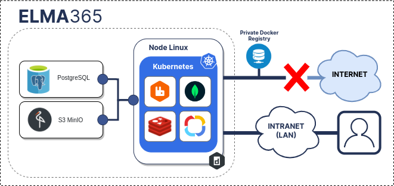
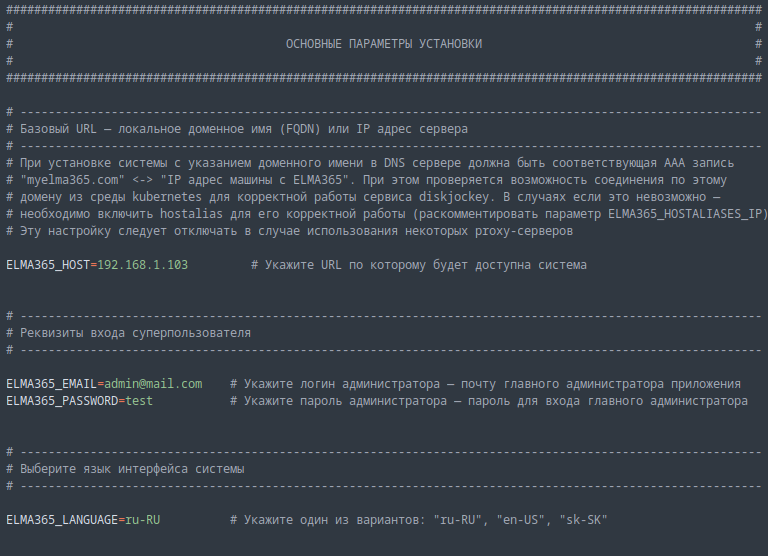
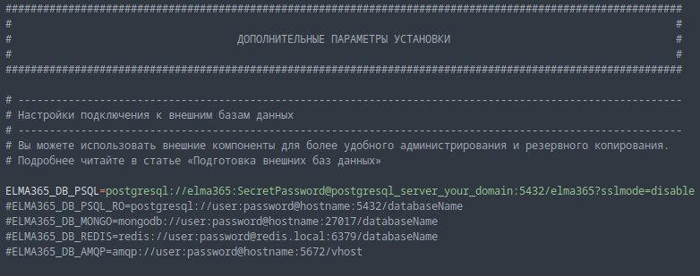
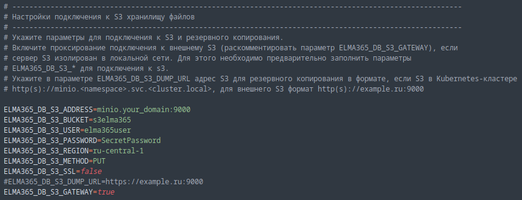
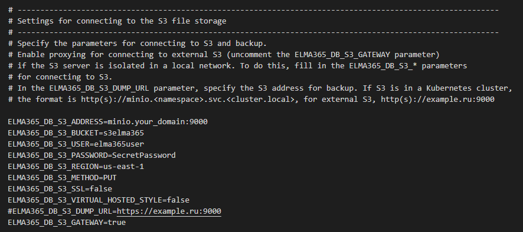
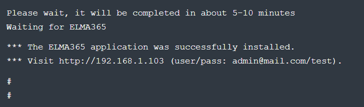
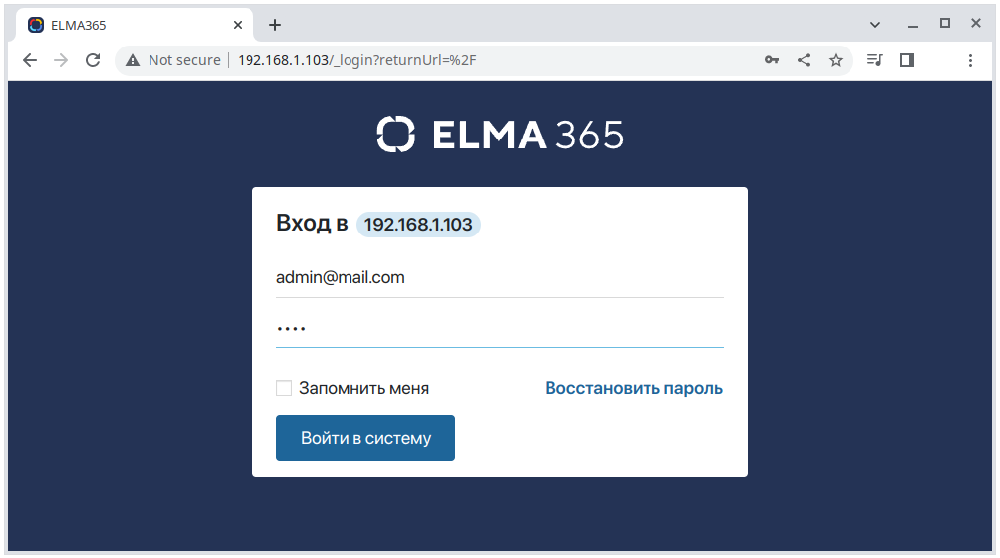

начало внимание
С 30.05.2024 заблокирован доступ из РФ к Docker Hub. Ознакомьтесь с официальным заявлением компании.
конец внимание
ELMA365 редакции Standard можно установить в закрытый контур без доступа в интернет. Вариант установки Kubernetes-in-Docker (KinD) наиболее прост и позволяет запускать локальный кластер Kubernetes с использованием узла Docker контейнера в закрытом контуре без доступа в интернет.
Установка состоит пяти этапов:
- Подготовка инфраструктуры.
- Загрузка файлов для офлайн-версии.
- Установка Docker на компьютер в закрытый контур.
- Заполнение конфигурационного файла.
- Запуск скрипта установки.

Шаг 1: Подготовка инфраструктуры
Под инфраструктурой понимаются необходимые для работы приложения ELMA365 On-Premises компоненты.
Начало внимание
Предполагается, что зависимые компоненты должны быть развёрнуты заказчиком самостоятельно. Все работы по организации отказоустойчивой локальной архитектуры, настройке отказоустойчивости зависимых компонентов также остаются на стороне заказчика.
Конец внимание
Компоненты, необходимые для работы приложения ELMA365 On-Premises:
- Docker;
- PostgreSQL;
- MongoDB;
- RabbitMQ;
- Redis;
- S3 (MinIO).
Встроенные компоненты хранения данных подходят для ознакомительных целей и в особых случаях — для организации стендов тестирования и разработки. Если в дополнительных параметрах установки не заданы параметры подключения к внешним базам данных и S3-хранилищу, автоматически будут использованы встроенные компоненты хранения данных (PostgreSQL, MongoDB, RabbitMQ, Redis, S3 MinIO).
В рамках текущей статьи база данных PostgreSQL и объектное хранилище S3 будут внешними. База данных PostgreSQL развернута по статье «PostgreSQL», объектное S3-хранилище развернуто по статье «MinIO S3». Для подключения к PostgreSQL и MinIO S3 используются стандартные строки подключения и пароли.
Шаг 2: Загрузка файлов для офлайн-версии
- На компьютере с доступом в интернет загрузите необходимые файлы для офлан-версии (объём загружаемых файлов ~4-5 ГБ), выполнив следующую команду:
sudo curl -fsSL -o elma365-docker.sh https://dl.elma365.com/onPremise/latest/elma365-docker-offline-latest && \
chmod +x elma365-docker.sh && \
./elma365-docker.sh
Адреса для загрузки других версий ELMA365 перечислены в статье «Ссылки для скачивания дистрибутивов ELMA365».
Загрузочный скрипт создаст каталог с наименованием elma365-X.Y.Z в каталоге, откуда он был запущен, и загрузит в него необходимые файлы.
По окончании загрузки файлов для офлайн-версии загрузочный скрипт выведет информацию о том, в какую директорию были загружены файлы, и предложит скопировать их на компьютер в закрытый контур.
Пример выполнения загрузочного скрипта:

- После загрузки всех файлов полученный каталог
elma365-X.Y.Zскопируйте на сервер, где будет производиться установка.
Шаг 3: Установка Docker на компьютер в закрытый контур
Установите Docker для вашей операционной системы на локальный компьютер в закрытый контур.
начало внимание
Обратите внимание, KinD не поддерживает создание Kubernetes-кластера с Cgroups v2. Подробнее о возможных ошибках читайте в документации.
конец внимание
Шаг 4: Заполнение конфигурационного файла
При первом запуске скрипт установки создаст файл конфигурации с наименованием config-elma365.txt в каталоге, откуда он был запущен.
- На компьютере в закрытом контуре, куда были скопированы файлы для оффлайн-версии, перейдите в каталог
elma365-X.Y.Zи запустите скрипт установки ELMA365 для создания конфигурационного файла, выполнив следующую команду:
sudo ./elma365-docker.sh --offline
начало внимание
Для создания нового стартового (default) файла конфигурации переименуйте существующий файл конфигурации config-elma365.txt и запустите скрипт установки с ключом --new-config.
конец внимание
- Внесите изменения в подготовленный скриптом установки конфигурационный файл
config-elma365.txt. - Для быстрого старта приложения ELMA365 Standard раскомментируйте и заполните необходимые переменные.
Заполнение основных параметров в конфигурационном файле config-elma365.txt может выглядеть следующим образом:

Где:
ELMA365_HOST=192.168.1.103— IP-адрес хостовой машины, по которому будет доступно приложение ELMA365 Standard. Подробнее о создании домена (FQDN) читайте в «Изменение параметров ELMA365 Standard»;ELMA365_EMAIL=admin@mail.com— адрес электронной почты администратора;ELMA365_PASSWORD=test— пароль администратора;ELMA365_LANGUAGE=ru-RU— язык установленной системы.
- Настройте подключение к внешним базам данных и объектному S3-хранилищу.
начало внимание
Встроенные компоненты хранения данных подходят для ознакомительных целей и в особых случаях для организации стендов тестирования и разработки. Если в дополнительных параметрах установки не заданы параметры подключения к внешним базам данных и S3 хранилищу, то автоматически будут использованы встроенные компоненты хранения данных (PostgreSQL, MongoDB, RabbitMQ, Redis, S3 MinIO).
конец внимание
Для подключения к внешней базе данных PostgreSQL расскоментируйте и заполните параметр ELMA365_DB_PSQL (укажите строку подключения, полученную на шаге 6 статьи «PostgreSQL»). Например:

Расскоментируйте и задайте для подключения к S3-хранилищу:
- параметры
ELMA365_DB_S3_ADDRESS,ELMA365_DB_S3_BUCKET,ELMA365_DB_S3_USER,ELMA365_DB_S3_PASSWORD,ELMA365_DB_S3_REGION,ELMA365_DB_S3_METHOD,ELMA365_DB_S3_SSL(укажите параметры подключения, полученные на шаге 10 статьи «MinIO S3»); - значение
trueв параметреELMA365_DB_S3_GATEWAY— для включения проксирования подключений к S3 через ELMA365.
Пример:

- Поскольку приложение ELMA365 Standard устанавливается в закрытый контур (без доступа в интернет) с ключом
--offline, при генерации конфигурационного файла необходимо заполнить параметрELMA365_PRIVATE_REGISTRY_URL.
начало внимание
В параметр ELMA365_PRIVATE_REGISTRY_URL автоматически подставляется IP-адрес с интерфейса, на который указывает default-маршрут.
конец внимание
Укажите адрес приватного репозитория Docker-образов в параметре ELMA365_PRIVATE_REGISTRY_URL:

Где:
ELMA365_PRIVATE_REGISTRY_URL=192.168.0.103:5000— URL для приватного репозитория с форматомip:port:
192.168.0.103— IP-адрес приватного репозитория Docker-образов;5000— порт приватного репозитория Docker-образов.
В случае отсутствия собственного приватного репозитория, можно использовать локальный приватный репозитории. Для этого раскомментируйте параметр ELMA365_LOCAL_PRIVATE_REGISTRY_ENABLE и установите значение true.
начало внимание
Если используется локальный приватный репозиторий и если Docker установлен через Snap, в файле конфигурации необходимо раскомментировать и изменить пути до папок/каталогов для параметров: ELMA365_INSTALL_DIR, ELMA365_BACKUP_DIR, ELMA365_LOCAL_PRIVATE_REGISTRY_DIR, например, на:
ELMA365_INSTALL_DIR=/mnt/elma365/docker;ELMA365_BACKUP_DIR=/mnt/elma365/backup;ELMA365_LOCAL_PRIVATE_REGISTRY_DIR=/mnt/elma365/registry.
конец внимание
Подробнее о параметрах конфигурационного файла config-elma365.txt читайте в статье «Изменение параметров ELMA365 Standard».
Шаг 5: Запуск скрипта установки ELMA365 Standard
После запуска скрипт установки разместит необходимые образы в репозитории Docker-образов. Далее будет производиться установка приложения ELMA365 Standard, время установки занимает 10-15 минут.
начало внимание
В системе должен быть задан маршрут по умолчанию.
конец внимание
- Запустите загруженный ранее скрипт установки с помощью команды:
sudo ./elma365-docker.sh --offline
По окончании установки в скрипте отобразится сообщение об успешной установке приложения ELMA365 Standard.
- Запустите браузер и откройте страницу входа в приложение ELMA365 Standard по адресу
http://ELMA365_HOST. ПараметрELMA365_HOSTбыл указан в файле конфигурацииconfig-elma365.txtна шаге заполнения конфигурационного файла.
В представленном примере используется следующий адрес страницы входа в приложение ELMA365 Standard: http://192.168.1.103

- В качестве логина и пароля укажите адрес электронной почты администратора и пароль, который использовался в файле конфигурации
config-elma365.txtв параметрахELMA365_EMAILиELMA365_PASSWORD.
В приведённом примере используются:
- Логин — admin@mail.com;
- Пароль — test.
- Нажмите кнопку Войти в систему.
Откроется окно активации системы ELMA365.
- Активируйте систему. Подробнее об этом читайте в статье «Активация On-Premises».
Офлайн-установка приложения ELMA365 редакции Standard успешно закончена.
Начало внимание
Сохраните файл config-elma365.txt для последующих обновлений.
Конец внимание